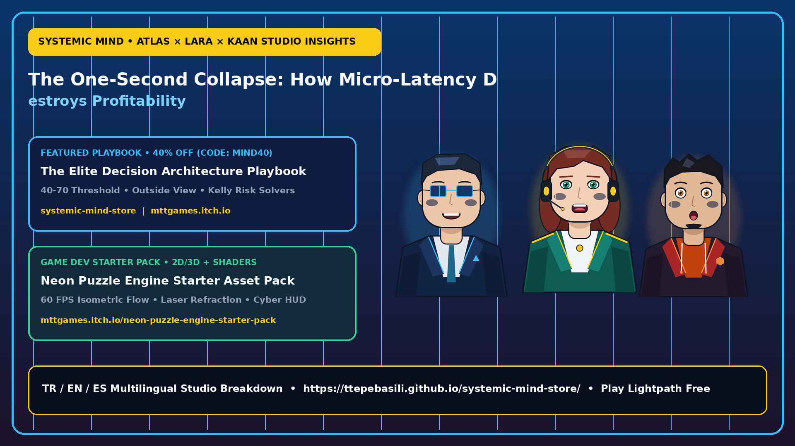

The One-Second Collapse: How Micro-Latency Destroys Profitability — Atlas, Lara ve Kaan ile Mimari Derinlik Analizi

Bu bölümde stüdyo ekibimiz Atlas (Analitik Sistem Mimarı), Lara (Meraklı Araştırmacı) ve Kaan (Stres Testi & Ters Köşe Uzmanı) ile The One-Second Collapse: How Micro-Latency Destroys Profitability konusunun perde arkasındaki gerçek mühendislik dengelerini inceledik.
1. Görünmez Darboğazları Erken Yakalamak
Ortalama gecikme değerleri sağlıklı görünürken bile %99 kuyruk diliminde biriken bellek tahsisleri sistemin gerçek kapasitesini eritir. Sabit boyutlu halka tamponlar (ring buffers) ve sıfır kopya veri akışı, hem sunucu faturasını düşürür hem de 60 FPS kare sürekliliğini korur.
Studio Dialogue Highlights
- Atlas: Your system isn't failing because of downtime; it's bleeding out through the cracks of a sub-millisecond delay. A single second of perceived lag triggers a seven percent conversion drop, yet you’re obsessing over server uptime while ignoring the physics of your own data pipeline.
- Lara: Seven percent? Atlas, that sounds like a rounding error in a budget spreadsheet. Why would a tiny, invisible fraction of time have such a violent reaction on actual revenue? It feels like the system is gaslighting the user.
- Kaan: Exactly, Lara. It’s the 'Digital Uncanny Valley.' If a site takes five seconds, I assume it's broken and leave. But if it stalls for 400 milliseconds, my brain doesn't think 'error'—it thinks 'this company is incompetent.' That psychological friction is a silent killer.
- Atlas: It’s not just perception, Kaan. It’s synchronization. In distributed architecture, a 100ms lag across four microservices creates a 400ms delay at the edge. By the time the packets hit the user's browser, your 'real-time' engine is actually a history lesson.
- Lara: So, we are essentially building high-speed trains that lose time at every station? That sounds like a fundamental design flaw rather than a hardware issue.
- Kaan: It’s worse. We spend millions on cloud infrastructure, but our code creates 'n+1' query patterns that force the database to chat more than a teenager on a Sunday afternoon. Why optimize the hardware when the code is constantly begging for data?
2. Karar Mimarisi ve Uygulamalı Kaynaklar
Mühendislik ve oyun geliştirme projelerinizde bu prensipleri doğrudan uygulamak için doğrulanan iki temel kaynak paketimizi aşağıdan inceleyebilirsiniz: